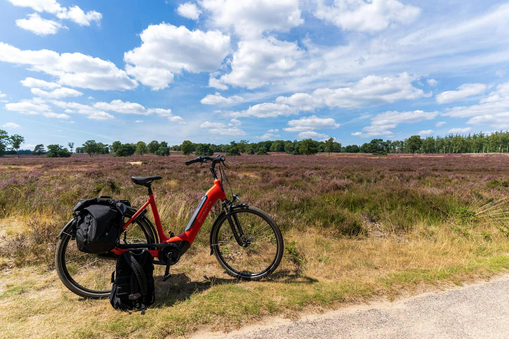

Iedere laatste donderdag van de maand
Onbeperkt spareribs
Spareribs gelakt met burensaus, zoveel als je op kunt.
€ 25,70 p.p.
Reserveer een plekjeEetcafé-restaurant aan het Vorstermansplein, Heusden
Koffie van de baristamachine, een uitgebreide lunch, borrelen met speciaalbier of een cocktail, en 's avonds aan tafel. Op een fietsroute door De Peel, met een ruim terras.
Dinsdag t/m zondag open vanaf 11.00 uur, keuken 12.00 tot 21.00 uur
Keuken open van 12.00 tot 21.00 uur. Lunch 12.00 – 16.00, diner 17.00 – 21.00 (januari t/m maart tot 20.00 uur).
Van een tosti tot een runderentrecôte, van een Mojito tot een Westmalle. Alle prijzen in euro's.
De keuken is voor lunch geopend van 12.00 tot 16.00 uur. Brood- en eiergerechten worden geserveerd op desembrood, keuze uit licht of donker.
Salades worden geserveerd met brood.
Burgers worden geserveerd met friet.
Onze producten kunnen verschillende soorten allergenen bevatten. Lunchkaart als PDF
De keuken is voor diner geopend van 17.00 tot 21.00 uur (in januari t/m maart tot 20.00 uur). Hoofdgerechten worden geserveerd met friet en garnituur.
Burgers worden geserveerd met friet.
Salades worden geserveerd met brood.
Onze producten kunnen verschillende soorten allergenen bevatten. Dinerkaart als PDF

Liever een vaste prijs voor de hele borrel? Kijk bij de arrangementen.

Onze collega's vertellen je graag welke cocktail er deze maand op de kaart staat.
Zin in meer? Misschien is ons cocktailarrangement iets voor jou.
Zin in iets lekkers bij de koffie? Vraag de bediening naar het aanbod.
Wisselende seizoensbieren: onze collega's vertellen je graag wat er nu op de kaart staat.
Twee vaste avonden om in je agenda te zetten. Reserveer een plekje via de site of bel even op 0493 501093.
Iedere laatste donderdag van de maand
Spareribs gelakt met burensaus, zoveel als je op kunt.
€ 25,70 p.p.
Reserveer een plekje
Niet in juni, juli en augustus
Zin in een heerlijke borrelavond? Laat je verrassen door 5 rondes speciaalbier of wijn, gecombineerd met 5 smakelijke hapjes.
€ 40,- p.p.
Reserveer een plekjeVoor een verjaardag, een vriendengroep of gewoon omdat het kan. Bij elk arrangement hoort een koude borrelplank, nacho's en bittergarnituur.
2,5 uur tapbier, wijn en fris, inclusief koude borrelplank, nacho's en bittergarnituur.
€ 30
Vier speciaalbieren van onze kaart naar keuze, inclusief koude borrelplank, nacho's en bittergarnituur.
€ 30
Drie cocktails van onze kaart naar keuze, inclusief koude borrelplank, nacho's en bittergarnituur.
€ 34
Er was eens… Zo begon het sprookje van buurman en buurman, samen met de 2 echtgenotes: De Buren!
Nooit speciaal op zoek geweest naar iets in de horeca, maar mede om de leefbaarheid in ons mooie dorp Heusden hoog te houden ontstond het idee. Nadat ons de mogelijkheid werd geboden om Hotel Huys van Heusden en het voormalige restaurant Paulus over te nemen, kwam het enthousiasme van alle kanten boven drijven. Met die energie zijn we vol aan de slag gegaan om van het restaurant een gezellige ontmoetingsplek te maken, met aanbod van eten en drinken.
Dat is precies waar wij van genieten! Daarom nodigen we jullie graag uit voor een heerlijke kop thee of koffie, bereid met onze baristamachine, eventueel vergezeld van smakelijk gebak. Maar dat is nog niet alles: je kunt bij ons ook lunchen, borrelen en dineren. Onze drankselectie omvat een breed scala aan (speciaal)bieren, lekkere wijnen en een uitgebreide cocktailkaart.
Of je nu een gezellige avond uit wilt, een speciale gelegenheid viert of gewoon met vrienden wilt eten: bij De Buren ben je aan het juiste adres.
“Een heerlijke plek om gezellig te lunchen”

Aan de rand van De Peel, langs diverse fietsroutes door het Peellandschap. De perfecte plek om even te pauzeren op ons ruime terras.
0493 501093
info@burenvanheusden.nl
| Maandag | gesloten |
|---|---|
| Dinsdag | 11.00 – 22.00 |
| Woensdag | 11.00 – 22.00 |
| Donderdag | 11.00 – 22.00 |
| Vrijdag | 11.00 – 01.00 |
| Zaterdag | 11.00 – 01.00 |
| Zondag | 11.00 – 22.00 |
Keuken open van 12.00 tot 21.00 uur.
Route plannenOvernachten kan in ons naastgelegen Hotel Huys van Heusden, met 10 prachtige hotelkamers. Vraag ernaar via 0493 501093 of info@burenvanheusden.nl.